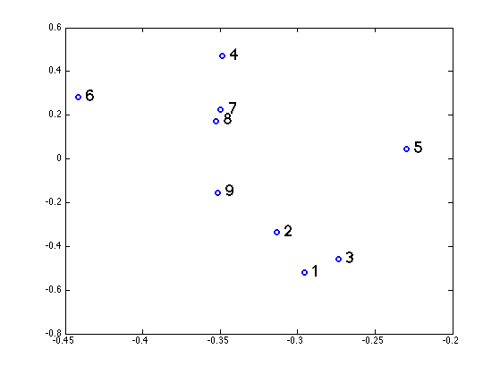

clear all
X = load('lsiMatrix.txt')';
words = textread('lsiWords.txt', '%s');
[U,S,V] = svd(X);
K = 2;
UK = U(:,1:K);
SK = S(1:K, 1:K);
VK = V(:,1:K);
[nwords ndoc] = size(X);
Xhat = VK';
figure(1);clf
for j=1:ndoc
plot(Xhat(1,j), Xhat(2,j), 'o', 'linewidth', 2);
hold on
eps = 0.005;
h=text(Xhat(1,j)+eps, Xhat(2,j)+eps, sprintf('%d', j),'fontsize',18);
end
ndx = strmatch('abducted',words);
q = zeros(nwords,1);
q(ndx) = 1;
qhat = inv(SK)*UK'*q;
for j=1:ndoc
tmp = (qhat'*Xhat(:,j))/(norm(qhat)*norm(Xhat(:,j)));
angle(j) = acos(tmp)*(180/pi);
end
[ndx, angles] = sort(angle)
top3 = ndx(1:3)
ndx =
Columns 1 through 4
26.5830 27.7366 39.9344 63.2745
Columns 5 through 8
97.6569 113.1596 119.4842 119.5270
Column 9
140.3943
angles =
Columns 1 through 7
1 3 2 9 5 8 7
Columns 8 through 9
6 4
top3 =
26.5830 27.7366 39.9344
